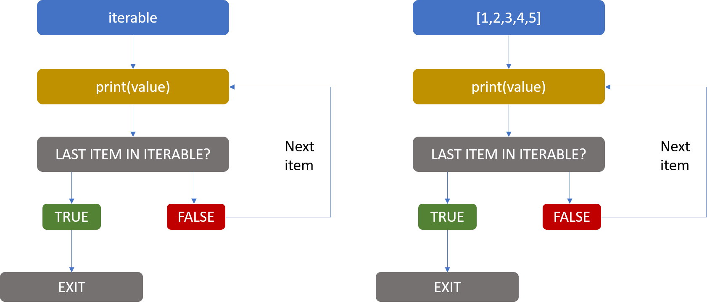
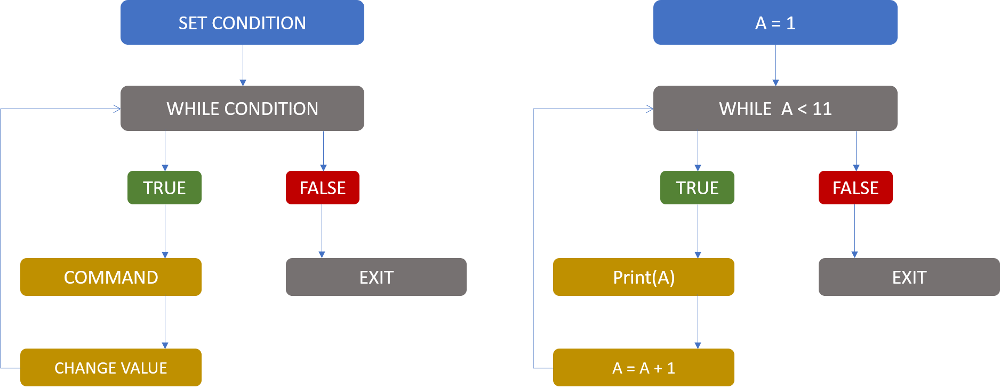
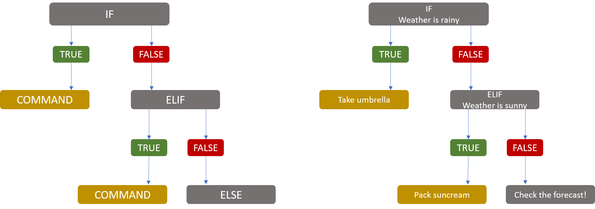

Chapter 10 - Loops and Control Flow

This is a HTML document. The Introduction to Python course is written and intended to be used in a Jupyter Notebook file. These HTML documents have been made available for users who require screen readers or other accessibility needs. These HTML documents have been tested, but if you notice any errors or any compatibility issues please contact us on the GSS Capability email inbox.
If you are using a screen reader you will need to set your punctuation level (sometimes called verbosity) to full, especially for the code sections.
Chapter Overview and Learning Objectives:
- Loops
- For Loops
- While Loops
- Control Flow
- If, Elif and Else Chains
1 Loops
You may be wondering why we revised comparison and logical operators in the lead up to this chapter of Core Part 2. This is because we use these conditional statements and comparison operators when we create loops (seen in this section) and control flow (seen in a later section).
Loops are useful for when we need to repeat a section of code, such as for each piece of data in a list. Often we have large Data Structures which we must apply various methods across, and whilst there are functions that allow us to do this easily, sometimes we must resort to the method of looping.
Python gives us two forms of loops, a for loop and a while loop.
1.1 For Loops
When we use a for loop, we take each item in an iterable and repeat an action over it. True to its name, an iterable is something we can iterate over (a.k.a perform repeatedly) and we have seen many of these already in Core Part 1. For example we have:
- Lists
- Tuples
- Ranges (recall range() and np.arange())
- Strings (Yes, you can iterate over these, character by character!)
In general, the syntax for coding these goes as follows:
for each_thing in my_iterable:
do_this_action()
Let’s break this down as there are some interesting concepts here:
For loops start with the keyword for (syntax highlighting is in play!).
This is followed by a variable that refers to each item within the iterable in turn. This is chosen by you so using a name that makes sense allows your code to be more readable (for example if you have a list of numbers, this could be num).
The keyword in is followed by the iterable we want to loop over.
The line is finished with a colon :. This tells python that whatever follows belongs to this loop.
The next lines contain the actions that will happen for each item in the iterable. This is indented by 4 spaces or a tab. Most code writing tools will automatically indent for you. To tell Python that something is outside the loop, you need to un-indent the code, so that it is effectively a separate statement.
Let’s see an example where we print out each number of a list.
1.1.1 Example 1
# Create my iterable
number_list = [0, 1, 2, 3, 4, 5]
# Create my for loop
for each_number in number_list:
print(each_number)
# Something outside the loop0
1
2
3
4
5print("This is outside of the loop!")This is outside of the loop!Here I’ve created a list called number_list with the numbers 0 to 5.
Again the keyword for is followed by a variable that refers to each item in my iterable at a given point in the loop. I’ve called this variable each_number . You’ll often see letters like i used here, which is particularly common when using range() objects.
The keyword in is followed by the iterable I want to loop over and the line is finished with a colon : .
My action is indented (by 4 spaces or a tab, remember, Jupyter did this automatically and so do many other IDEs), and tells the computer to use the print() function to print each_number.
1.1.2 Example 2
Let’s see a more complex example where we double each number and print it, using a different iterable, the range() object.
for each_item in range(6): # Remember that 6 is exclusive!
print(each_item*2)0
2
4
6
8
10We can apply these tools to much more complex objects and even contain more complex processes as well. For example, we can use functions, it doesn’t have to be printing numbers.
1.1.3 Example 3
Here we’re using the len() function to return the length of the string of each day of the week.
days_list = ["Monday", "Tuesday", "Wednesday", "Thursday",
"Friday", "Saturday", "Sunday"]
for day in days_list:
print(day, "has a length of", len(day))Monday has a length of 6
Tuesday has a length of 7
Wednesday has a length of 9
Thursday has a length of 8
Friday has a length of 6
Saturday has a length of 8
Sunday has a length of 61.1.4 Extended Example 4
I want to add each day and it’s length as a list into a new list called days_and_length.
I create a new blank list using [] and in my for loop I use .extend() to add a list of the day and the number of letters in the day to my list.
The reason we use .extend() and not .append() is because we are adding another iterable, in this case a list, to the end of an empty list. It is worth remembering that using .append() is fine for single values, whereas .extend() is recommended for adding an iterable into another.
Note that the creation of the new list is done outside of the loop. Why is this? It’s because everytime the loop returns to the first step, it will create a new list and overwrite each time, meaning we will end up with just the final pair of values at the end! Whereas if we create the container first, it will continually fill via the loop.
days_list = ["Monday", "Tuesday", "Wednesday", "Thursday",
"Friday", "Saturday", "Sunday"]
days_and_length = [] # Create a new blank list
for day in days_list:
days_and_length.extend([ day, len(day)])
# Return my new list
days_and_length['Monday', 6, 'Tuesday', 7, 'Wednesday', 9, 'Thursday', 8, 'Friday', 6, 'Saturday', 8, 'Sunday', 6]1.2 Exercises
You are given a list of measurements that are grams (g).
grams = [100000, 7899900, 967312, 49185, 6100]Write a for loop to convert all of these measurements to kilograms (kg) and store these values in a new list kg_conversion. Since we are just adding a single value, we can use .append() this time.
For reference, 1kg is the same as 1000 grams.
grams = [100000, 7899900, 967312, 49185, 6100]
kg_conversion = [] # Outside of the loop!
for each_weight in grams:
kg = each_weight/1000
kg_conversion.append(kg) # Add the new values
kg_conversion [100.0, 7899.9, 967.312, 49.185, 6.1]You are given a list of temperatures in Fahrenheit.
Use the following formula and a for loop to convert these into Degrees Celsius. Store the values in fahrenheit then celsius as pairs in a new list, named celsius conversion. It is also worth thinking about rounding here, as the numbers can get a big gnarly!
\(C= \frac{5}{9}(F - 32)\)
fahrenheit = [60, 72, 85, 93, 100]celsius_conversion = []
for each_temp in fahrenheit:
celsius = round(5/9 * (each_temp - 32), 2) # Apply formula
celsius_conversion.extend([each_temp, celsius]) # Extend since we are adding an iterable
celsius_conversion[60, 15.56, 72, 22.22, 85, 29.44, 93, 33.89, 100, 37.78]1.2.1 Weaknesses of Loops
I mentioned earlier that sometimes we must use loops when particular functions are not available, however, when it comes to large data structures, they normally wouldn’t be our first choice of investigation. It’s worth remembering that although loops can be useful, they can also be less efficient than inbuilt Python methods.
For example, I could use a for loop to go through each row of the titanic dataframe and find each persons fare as a % of the whole. While this wouldn’t be an incorrect use of code; it would be more inefficient then creating a new column using the pandas methods we’ve seen in previous chapters.
It’s always a good idea to think when faced with a scenario where you must repeat a task, if there a more “pythonic” way of doing this action, considering the different packages available to us (pandas, numpy and so on).
2 While Loops
Our other type of loops are while loops. Whilst for loops iterate a set amount of times, or over a set number of things, a while loop iterates constantly until it no longer meets a certain condition set by the user.
2.1 The structure of a while loop
Syntax wise, it goes as follows:
condition = value
while condition is True:
do_this_action()
2.1.1 Example
First we have to set our condition, which is stop_value = 0 here.
We start the loop with the keyword while followed by our conditional statement, and we finish, as with the for loop, with a colon :.
Underneath, as before we have the instructions that will be carried out until the condition equates to False. Here we’re printing out the value and then adding 1 to it; += 1 is a convenient way of adding 1 to a number. (This also applies to other mathematical operations, -=1 means subtract 1 each time).
It is important that our condition at some point will change so that the while loop will stop, or else it will continue running “forever” (you can always stop your code running with the stop button).
stop_value = 0
while stop_value < 5: # Condition
print(stop_value)
stop_value += 1
0
1
2
3
4What happens if you put the print() statement after the stop_value += 1?
stop_value = 0
while stop_value < 5 :
stop_value += 1
print(stop_value)1
2
3
4
5Can you guess what would happen if we remove the stop_value += 1 condition? (Hint: it could go on forever!) To escape your infinite loop press the solid square “stop” button on the menu bar.
2.2 Exercise
Code a while loop with the following characteristics:
Assign the value of a variable temperature to be 40.
The condition of the while loop, should check if the temperature is higher than or equal to 20.
The first command in the body should print out “Its way too hot, it’s” followed by the current value of temperature.
The next command should decrease the temperature by 2 and assign this new value to temperature again.
temperature = 40
while temperature >= 20:
print("It's way too hot, it's", temperature)
temperature -= 2It's way too hot, it's 40
It's way too hot, it's 38
It's way too hot, it's 36
It's way too hot, it's 34
It's way too hot, it's 32
It's way too hot, it's 30
It's way too hot, it's 28
It's way too hot, it's 26
It's way too hot, it's 24
It's way too hot, it's 22
It's way too hot, it's 203 Control Flow
Now we introduce Control Flow, which concerns the order of which the computer evaluates expressions. We can control this flow (sorry!) using special keywords in Python. It is worth noting that the concepts introduced here can hold functions, loops and other such processes within their sequence of statements.
3.1 If, Elif and Else Statements
The major keywords we introduce in this sub-chapter are if, elif and else. These are not loops, but are similar in terms of the syntax we make use of to utilise them.
They take a conditional argument, and if that is met (evaluates to True) then the associated action is completed. We usually only have one of these in a singular control flow.
If the condition is not met it will move to an elif (stands for else if) condition, and if that condition is met the associated action will be completed. There are often a few of these to cover some alternative if conditions.
Finally, if none of the conditions are met the actions in the else block are executed. This is usually known as a default condition, i.e. if all else fails, then execute this.
As you can see, this gives us a lot of flexibility in how our code will be written and run. The syntax goes as follows:
condition = value
if condition_1:
do_action_1()
elif condition_2:
do_action_2()
else:
do_action_3()You can see that each keyword starts a new indent when followed with a :, so ensure that the elif, else keywords are not within an indent themselves, as this will mess up the flow!
A really important note to make here is that there should be no blank lines between each statement. If this is done, Python will think that the if statement was the only one in the chain and thus will throw a syntax error upon seeing the elif or else.

Let’s look at an example!
3.1.1 Example 1: if-else
Here we will use an equivalence condition (==) in an if-else chain without the use of an elif.
my_height = 6
if my_height == 5:
print("We're the same height")
else:
print("Your height is different")Your height is differentA few very important things to note here:
We can just have an if, or we can just have an if and an else.
If the first criteria isn’t met it will move to an elif if one exists and evaluate that statement. If True that code will be actioned.
If the elif equates to False it will skip that code block and move to the next elif if one exists. If not it will skip to the else.
3.1.2 Example 2: if-elif-else
We can add in more choices using an elif statement.
my_height = 7
if my_height == 5:
print("We're the same height")
elif my_height > 7:
print("You're tall!")
else:
print("Your height is different")Your height is different3.1.3 Multiple Conditions in a Chain
We can use multiple conditions too, using our logical operators & (and) , | (or). Like our filters in Core Part 1, each condition gets it’s own set of round brackets to ensure Python evaluates them correctly.
Example
my_height = 9
if (my_height == 5):
print("We're the same height")
elif (my_height > 7) & (my_height < 10):
print("You're tall!")
else:
print("Your height is different")You're tall!Here we want the action to happen if the value is greater than 7 and less than 10. The brackets are important as they tell Python to evaluate the elif as a whole.
If we didn’t have the brackets inputting 11 still evaluates as “You’re tall” because it meets the condition “my_height > 7” and performs the action. Let’s see this in action:
my_height = 11
if my_height == 5:
print("We're the same height")
elif my_height > 7 & my_height < 10:
print("You're tall!")
elif my_height == 11:
print("It's 11")
else:
print("Your height is different")You're tall!3.1.4 The Workings of Control Flow
It’s important to know how the if, elif, else works. When the condition is met it performs the action associated with it and then stops evaluating the rest of the conditional code.
Example
Here we have two options for when the value is 5. However it will only print out “We’re the same height!” as the if evaluated to true and it stopped there without reading the rest.
my_height = 5
if (my_height == 5):
print("We're the same height")
elif (my_height > 7) & (my_height < 10):
print("You're tall!")
elif (my_height == 5):
print("Wow, it's still 5!")
else:
print("Your height is different")We're the same heightIf you use other languages you may be used to using switch cases; or case_when() in R, which are faster and more efficient methods. Python is starting to introduce switch cases, but only from Python version 3.10.
There are ways to implement something similar using either functions or classes. This tutorial from Data Flair explains how.
If you’re looking to apply something similar to a DataFrame np.select() might be a useful tool and is covered in the Core Part 1 Reference Materials.
3.2 End of Chapter Exercise
Write a loop containing control flow with an if, elif and else statement, that loops through the numbers from 1 to 30. It should have the following properties:
If the number is a multiple of both 3 and 5, print FizzBuzz.
If the number is a mutiple of 3, print the word Fizz.
If the number is a mutiple of 5, print the word Buzz.
For all other values print the number.
You can use the modulus operator for this, which is the % in python, and shows us our remainder when dividing integers.
For example checking if something is completely divisible by 7 we could do
item % 7 == 0
If this returns True we know it’s divisible by 7, if it returns False then it’s not!
# Example of Modulo
10 % 3 == 0
# Returns False (10 / 3 has a remainder of 1, so does not have a remainder of 0. However if we just used 10 % 3 it would give 1)False# Second example of Modulo
9 % 3 == 0
# Returns True (9 / 3 has a remainder of 0))True1 2 Fizz 4 Buzz Fizz 7 8 Fizz Buzz 11 Fizz 13 14 FizzBuzz 16 17 Fizz 19 Buzz Fizz 22 23 Fizz Buzz 26 Fizz 28 29 FizzBuzz
This is pseudo code, which is code written in english to help you structure your code. You have been seeing this alot when introducing the syntax of this chapter.
my_iterable = create a range or a list
for each_thing in my_iterable:
if my first conditon(s) :
action for first conditon
elif my second conditon:
action for second conditon
elif my third conditon:
action for third conditon
else:
action for everything else# Create my list of numbers - here using the list function
# and the range function, remember range is exclusive!
numbers_range = range(1, 31)
# Create the control flow
for each_number in numbers_range:
if (each_number % 3 == 0) & (each_number % 5 == 0) :
print("FizzBuzz")
elif (each_number % 3 == 0) :
print("Fizz")
elif (each_number % 5 == 0) :
print("Buzz")
else:
print(each_number)
# Or you could use a while loop
#number = 1
#while number < 31:
# if (number % 3 == 0) & (number % 5 == 0):
# print("FizzBuzz")
# elif (number % 3 == 0):
# print("Fizz")
# elif (number % 5 == 0):
# print("Buzz")
# else:
# print(number)
# number += 1 1
2
Fizz
4
Buzz
Fizz
7
8
Fizz
Buzz
11
Fizz
13
14
FizzBuzz
16
17
Fizz
19
Buzz
Fizz
22
23
Fizz
Buzz
26
Fizz
28
29
FizzBuzz4 Chapter Summary
Congratulations! You have conquered the world of control flow and laborious looping! You can now move on to Chapter 11, which covers a very useful alternative to looping in Python when working with certain data structures, as follows:
- Comprehension
- List Comprehension
- Dictionary Comprehension (Overview)